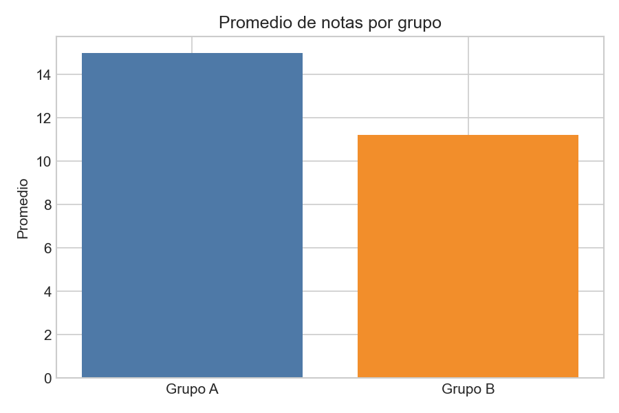
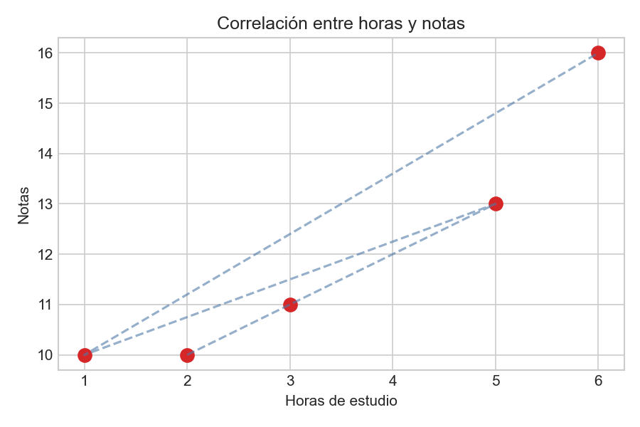

Archivo del notebook
Este ejercicio se basa en el archivo:
# LIBRERÍA: SciPy
from scipy import stats
import numpy as np
grupo_A = [14, 15, 13, 16, 17]
grupo_B = [10, 11, 12, 10, 13]
media_A = np.mean(grupo_A)
media_B = np.mean(grupo_B)
print(f"Promedio Grupo A: {media_A}")
print(f"Promedio Grupo B: {media_B}")
resumen = stats.describe(grupo_A)
print(f"Resumen Grupo A: {resumen}")
stat, p = stats.shapiro(grupo_A)
print(f"Shapiro-Wilk Grupo A: p = {p:.4f}")
t, p_valor = stats.ttest_ind(grupo_A, grupo_B)
print(f"Prueba T: t = {t:.4f}, p = {p_valor:.4f}")
horas = [2, 3, 5, 1, 6]
notas = [10, 11, 13, 10, 16]
r, p = stats.pearsonr(horas, notas)
print(f"Correlación Pearson: r = {r:.4f}")Resultados visuales

Promedios por grupo
Comparación de las medias entre el grupo A y el grupo B.

Correlación
Relación entre horas de estudio y notas obtenidas.
Qué se trabajó
- Uso de SciPy para análisis estadístico.
- Cálculo de medias, resumen descriptivo y pruebas estadísticas.
- Aplicación de Shapiro-Wilk, prueba T y correlación de Pearson.
- Visualización de resultados con NumPy y Matplotlib.